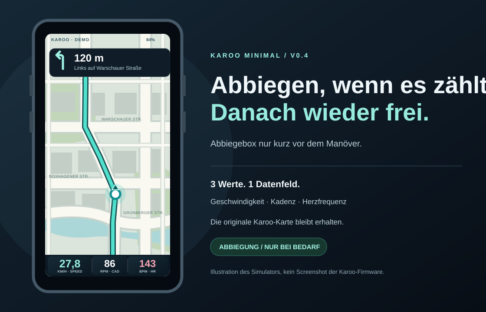

KAROO / MINIMAL · v0.4
Aktuelle Designvorschau. Abbiegehinweise sind nur im Simulator auf 180 m eingestellt; auf dem Karoo steuert die originale Navigation das Timing.
Interaktiven Simulator öffnen

Aktuelle Designvorschau. Abbiegehinweise sind nur im Simulator auf 180 m eingestellt; auf dem Karoo steuert die originale Navigation das Timing.
Interaktiven Simulator öffnen